Looking at Letterforms
There are so many categories of type. For the moment let’s just close our eyes and pretend there are only three categories. (And we can branch out / subdivide these in later classes as we further explore the material.) So let’s have a look:
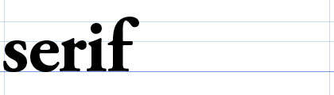The word Serif refers both to the structural elements adorning the basic glyph shape as well as any letter that has serifs. The above example is set in Garamond.
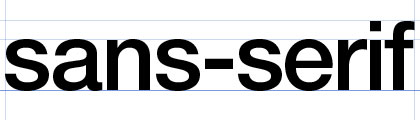Sans-serif type (also known as “gothic” or “grotesque” type) is a more streamlined form; literally “without serifs.” The above example is set in Helvetica.
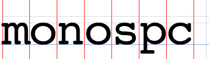Monospace faces have characters that are all of equal width. Or rather, the areas the glyphs may occupy are all of the same width—lest someone complain that the “m” above is wider than its counterparts. Look no further than your own code text editor to illustrate the usefulness of glyphs rigidly aligned to a grid. This example is set in Courier (similar but not the same as Courier New) which happens to be both monospaced and seriffed.
Horizontal measures
How wide is something? How much space should there be between letters? Let’s take a glance at some terms.
Tracking (or letter-spacing), refers to the overall visual density of a group of letters. Are they grouped tightly together? Loosely?
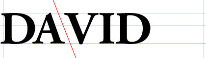Kerning is the task of adjusting space between two specific letters to create a more balanced optical alignment. For example, if a typeface’s kerning tables were not properly designed it is common to see too much space between the A and V so these will need to be manually kerned more tightly together:
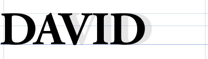Kerning is all about practice—learning to see the letters as abstract shapes that can be optically balanced. You can practice kerning right now in your browser with The Kerning Game.
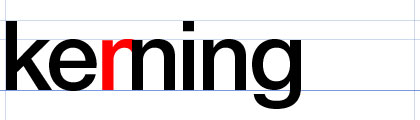Here’s a typographic joke: The word keming was coined by photographer and blogger David Friedman to describe improper kerning. (If you were to kern the letters r and n too tightly together they would begin to look like an m.)
Measured in dashes
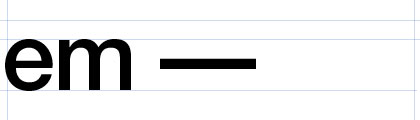An em is a unit of measure as many points wide as the type size. An em dash is a dash that is one em wide. For example, the above text is set in 96 point Helvetica and therefore the em dash is 96 points wide.
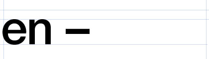An en is a unit of measure equal to half an em. An en dash is a dash that is one en wide. For example, the above text is set in 96 point Helvetica and therefore the en dash is 48 points wide.
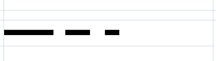Typographers care about their dashes! Can you correctly identify the ones above? It’s an em dash, then an en dash, followed by a hyphen. Not to be confused with minus! Don’t get caught with bad type—have a look at the appropriate use for each dash.
Going vertical
Now that we’ve looked at some horizontal units of measure, let’s take a look at vertical units.
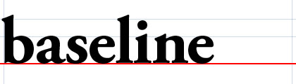Baseline: the horizontal axis that type is aligned to, and descender glyphs descend below.
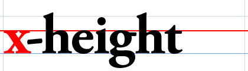x-height: the vertical distance between the baseline and the top of a lowercase x. A face’s x-height generally determines the height of the other lowercase letters, cross bars within taller characters, and other elements that are supposed to be vertically “generally in the middle.”
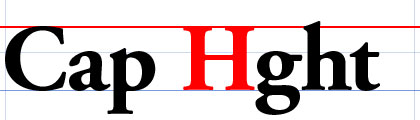Cap height: the height of a flat capital letter, such as an H, above the baseline. In general rounded characters may slightly overshoot their boundaries in order to be optically aligned.
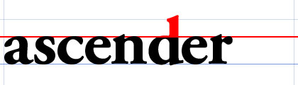Ascender: the portion of a glyph that extends above the x-height; also a character that has an ascender. Some typographers define an ascender to be the portion of a glyph that extends above the Cap height line, but I prefer to think of this as the ascender’s overshoot.
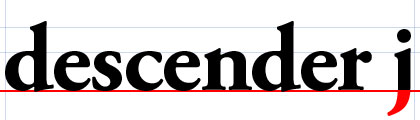Descender: the portion of a glyph that extends below the baseline; also a character that has a descender.

Leading is the vertical distance between two stacked baselines. Note, this is not the gap between the row above’s baseline and the row below’s Cap height.
Inspecting the glyph itself
Let’s have a look at this Typeface anatomy page and discuss some terms like stem, bowl, counter, and eye.
Where can I learn more about type?
For part of your homework you’ll watch the film Helvetica and this will serve as a gentle (and hopefully enjoyable) introduction not only to typography, but to some of the names and faces of actual typographers and designers practicing today.
Get thee to a design book store! There’s nothing like browsing through a physical space where the goodies literally surround you. Plus, this opportunity may not exist in another few decades so savor it while you can. Here are two bundles of dead trees in particular that I highly recommend:
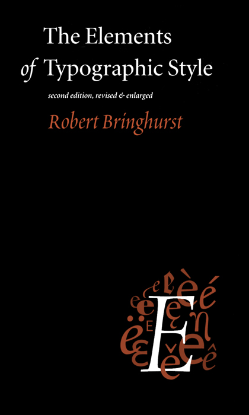
Elements of Typographic Style by Robert Bringhurst is a brilliant introduction to typography and page layout grids. How do font size and leading relate? How does the width of a paragraph measure relate to the size of the page? What are different methods for dividing a space into useful shapes for both content and negative space? Certainly, the book is print-focussed, but the core values extend right off the page to screen and beyond.
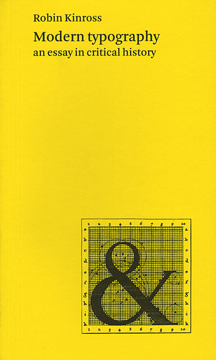
Modern Typography by Robin Kinross in a tour de force of typography history, critique, and insight. It’s not a how-to book, but provides solid academic backbone to any reader willing to engage it.
Who makes type?
Lots of people. They’re called typographers.
Here are just a handful of shops that might be of interest to you:
Hoefler & Frere-Jones
has designed a series of hits, many inspired by New York City letterforms.
For example, their famous
Gotham face
was inspired by the large metal signage that used to hang on the exterior of the Port Authority building.
(Gotham was later used for the inscription on the 9/11 memorial
cornerstone—NY Times.)
One of their newest faces,
Idlewild,
takes its name from JFK Airport’s original moniker.
Lineto is a Swiss collective
that takes its name from the PostScript “line-to” command used to communicate the vectors that create glyph shapes.
Many typographers contribute to Lineto’s collection.
For example Norm,
a Swiss studio well established in its own right,
created the typeface
Simple
used by the Cologne-Bonn Airport and now available through Lineto.
Meanwhile Lineto’s Akkurat
was created by independent designer Laurenz Brunner.
And there are of course many, many more.
Commercial Type is a younger shop with some great, fresh faces.
Typotheque is a dutch shop that makes beautiful faces
and was one of the first to license their entire catalog for use in CSS
(blog post).
FontFont is a heavy hitter and I guarantee you’ve seen their cut of
DIN in the wild.
And of course there’s Typekit, now owned by Adobe.
This is really just the tip of the ice berg.
What other font foundries can you find?
So what do we discuss next?
We could spend an entire semester—or years even—discussing just what we’ve hinted at today. But within this class our next steps will be to look at Swiss Modernist typography, the Bauhaus, and other movements that emphasize clean algorithms and legibility because they will be visually sympathetic to your coding tasks.